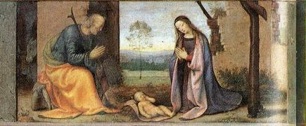
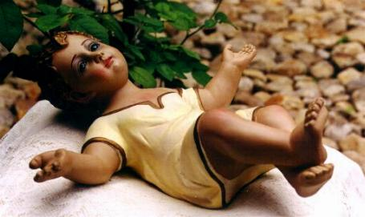
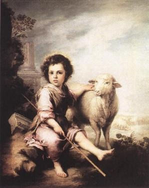
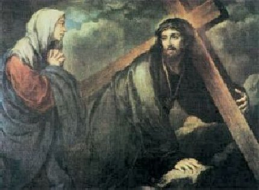
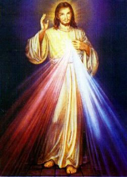
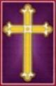

Acontecimentos mais importantes da Vida de JESUS, relatados com fidelidade conforme a Sagrada Escritura e realçados por uma notável quantidade de quadros famosos dos mais renomados pintores do mundo, que retrataram fatos inesquecíveis ocorridos durante a Obra Redentora do SENHOR".









ÍNDICE

PRÓLOGO (Nascimento, Infância)JUVENTUDE DO SENHOR (Páscoa dos Doze Anos, Período Oculto)
BATISMO DE JESUS (Nas Margens do Jordão, Outros Acontecimentos)
MILAGRES DO SENHOR - I (Bodas em Caná, Visita a Gádara)
MILAGRES DO SENHOR - II (Multiplicação dos Pães, Ressurreição de Lázaro)
ÚLTIMA PÁSCOA (Trama dos Judeus, Entrada Messiânica, Instituição da Eucaristia)
JULGAMENTO (Traição e Prisão, Na Casa de Caifás, Tribunal de Pilatos, Na Presença de Herodes)
FLAGELAÇÃO E CONDENAÇÃO (Novamente Diante de Pilatos, Coroa de Espinhos,Ecce Homo)
CRUCIFICAÇÃO (A Cruz, Via Crucis, Morte)
ASCENSÃO AOS CÉUS (Sepultamento, As Santas Mulheres, Ressurreição do SENHOR)
SITES DO APOSTOLADO e EMPRESAS DE BUSCAS